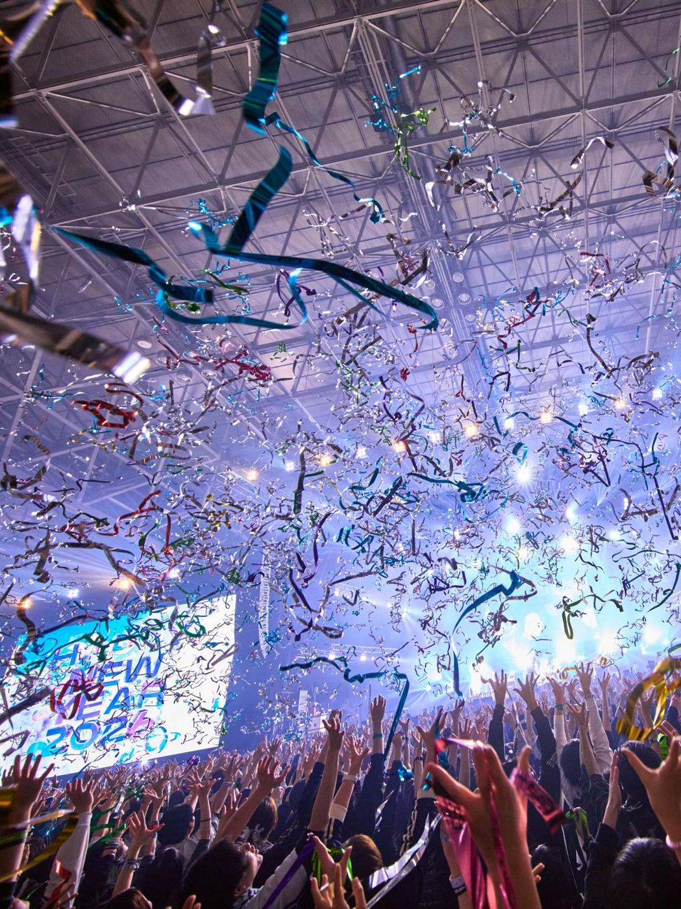

Festivals · Music
COUNTDOWN JAPAN 26/27
- Dates
- –
- Venue
- Makuhari Messe
- Location
- Chiba, Japan
- Format
- In-person
- Category
- Music
- Industry
- Rock / pop
- Organiser
- rockin'on holdings
- Official website
- https://countdownjapan.jp/
About
Five days: 26-27 and 29-31 December 2026 (28 December is a rest day). Dates are local to the host city (Japan Standard Time, UTC+9).
Topics: J-rock, J-pop, New Year countdown.
No organiser attendance figure found on the official pages fetched 24 Nov 2026. Ranked by our estimated size tier 'very large' (100,000+ attendees/visits), a judgement from format, venue and scale, not an official number.
Sources
- Official — https://countdownjapan.jp/